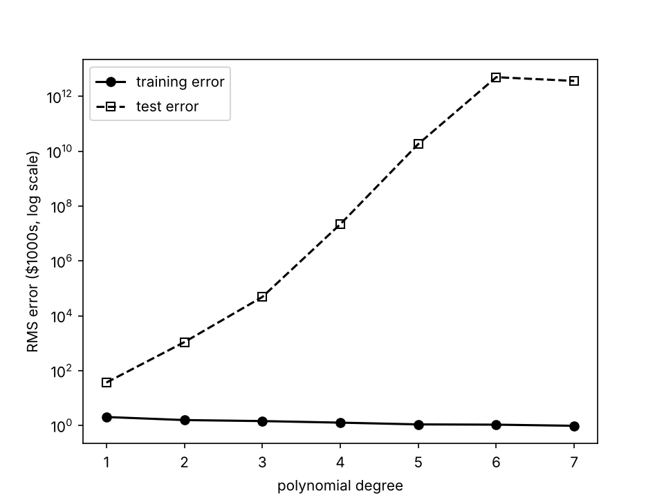
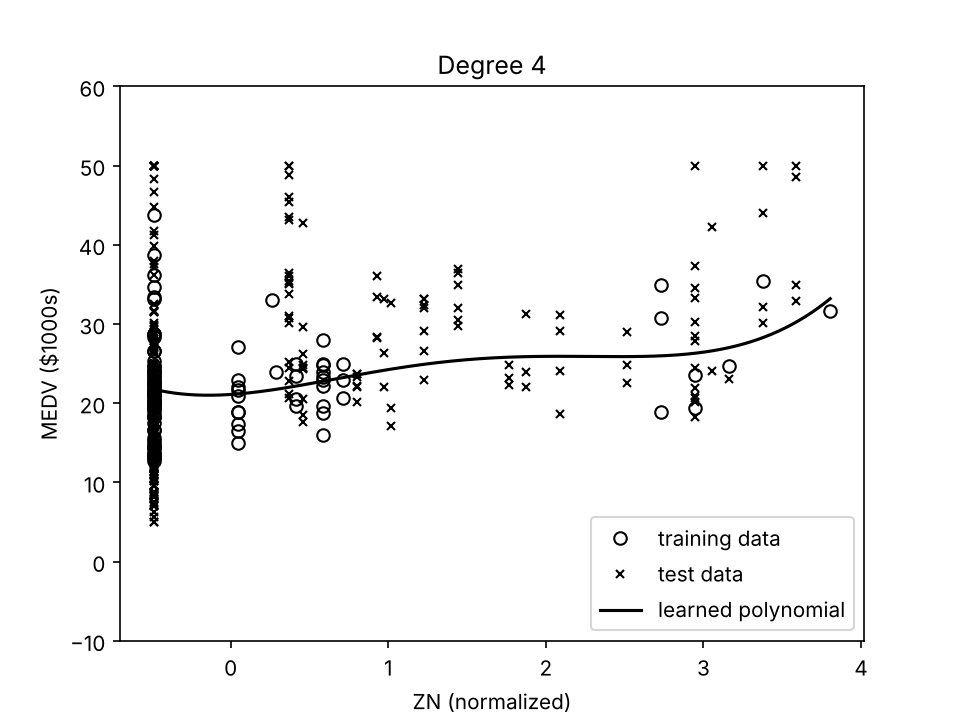
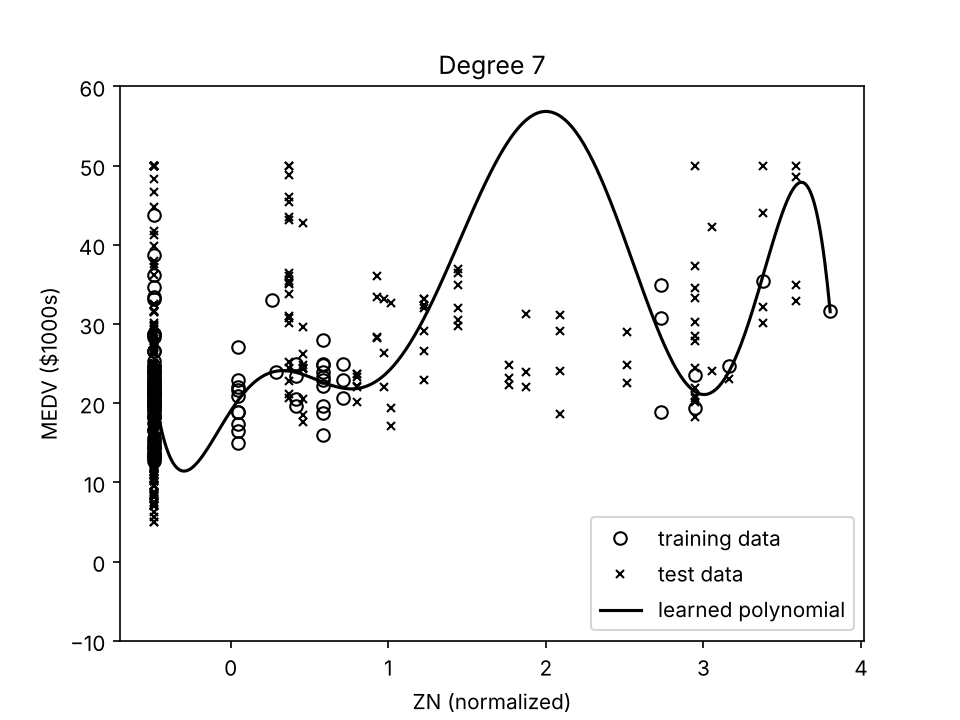
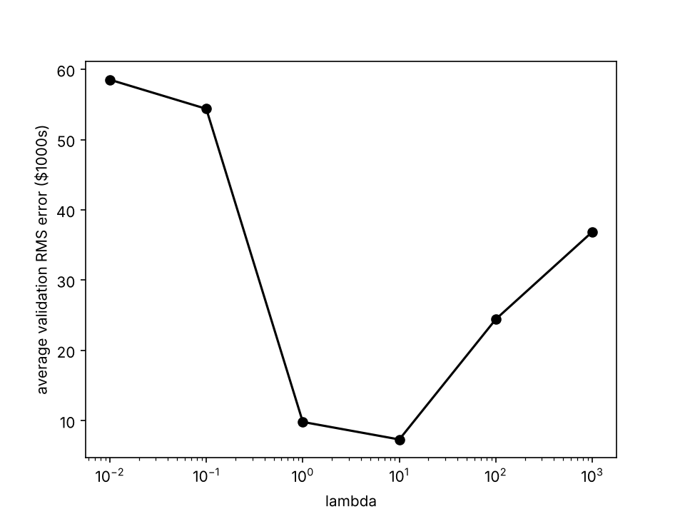
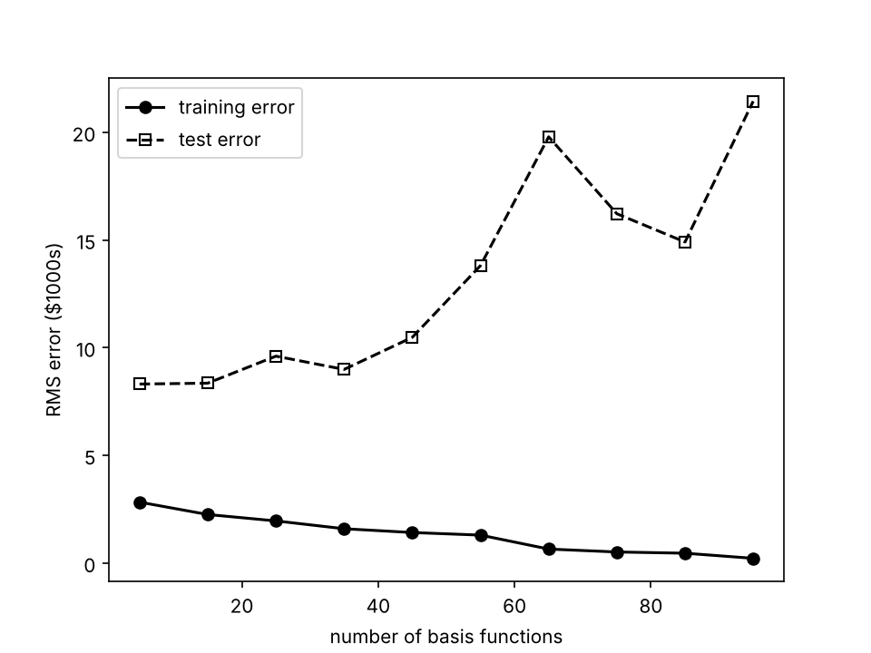
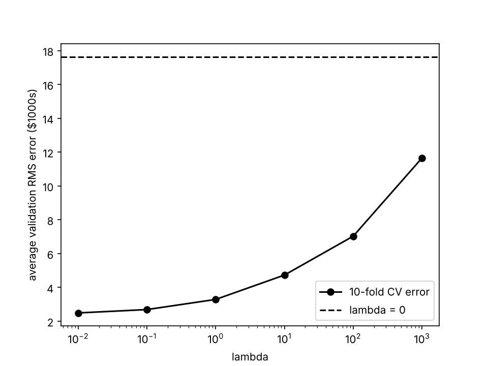

Kevin Fan 21005203
The data is the Boston housing set: 506 tracts, 13 features, and the target MEDV in $1000s. I used the first 100 rows for training and the other 406 rows for testing.
Each feature was normalized to zero mean and unit variance using all 506 rows (Xn in the handout) before the split. The target was not normalized, so all RMS errors are in $1000s. CHAS is 0 in all 100 training rows, so its normalized column is constant and parallel to the bias column, and the pseudo-inverse splits the constant term between the bias and the CHAS weight.
Without regularization the weights are the pseudo-inverse solution, computed
with np.linalg.lstsq. With regularization I used the ridge
regression form from the lectures,
w = (ΦTΦ + λI)−1ΦTt,
which is (XXT + λI)−1Xy with Φ = XT.
Φ includes the bias column (x0 = 1), so the bias weight is
penalized as well. RMS error is the square root of the mean squared error. The
handout does not say how to assign the folds, so for cross-validation I used 10
folds of 10 consecutive rows, like the diagram in the tutorial, and averaged the
validation RMS error over the folds.
The basis is the powers of each feature on its own (x1, x12, …, x2, x22, …) with no cross terms, plus a bias.

Figure 1. Training and test RMS error against polynomial degree, all 13 features. The y-axis is a log scale.
| Degree | Training RMS | Test RMS |
|---|---|---|
| 1 | 2.04 | 36.8 |
| 2 | 1.58 | 1.10 × 103 |
| 3 | 1.45 | 4.87 × 104 |
| 4 | 1.27 | 2.19 × 107 |
| 5 | 1.10 | 1.84 × 1010 |
| 6 | 1.07 | 5.02 × 1012 |
| 7 | 0.98 | 3.67 × 1012 |
Training error goes down steadily as the degree goes up, from 2.04 to 0.98. Test error is already 36.8 at degree 1 and grows by orders of magnitude after that, so the model overfits badly. Part of this is extrapolation: CRIM is between 0.006 and 1.61 in the training rows, but 54 test tracts have CRIM above 10, and higher powers of those values give huge predictions. The high-degree fits are also ill-conditioned, so their exact test errors, including the small drop at degree 7, depend on the solver and should only be read as very large.
| Weight | Feature | Value |
|---|---|---|
| bias | 8.762 | |
| w0 | CRIM | −29.697 |
| w1 | ZN | 0.125 |
| w2 | INDUS | −1.157 |
| w3 | CHAS | −2.389 |
| w4 | NOX | 2.491 |
| w5 | RM | 6.030 |
| w6 | AGE | −2.228 |
| w7 | DIS | 0.016 |
| w8 | RAD | −1.217 |
| w9 | TAX | −1.285 |
| w10 | PTRATIO | 0.334 |
| w11 | B | 0.606 |
| w12 | LSTAT | 0.187 |
w5, the weight on the 6th feature (RM), is 6.030. Because RM was normalized, this is the change in MEDV for one standard deviation of RM (0.70 rooms), or about $8.6k per extra room. A large positive effect from house size seems reasonable.
The weight on the 8th feature (DIS), w7, is 0.016, which is basically zero. This seems reasonable for this training set but not as a general statement about distance. In the training rows DIS is only weakly related to MEDV and is correlated with ZN and NOX, which are already in the model, so it has little left to explain. With correlated features ΦTΦ gets closer to singular and the individual weights are not stable, so I would not read much into this value.
For this part I used only the 2nd feature, ZN, and fit degrees 1 to 7. Figures 2 to 4 show degrees 1, 4 and 7.
Figure 2. Degree 1 polynomial on ZN.

Figure 3. Degree 4 polynomial on ZN.

Figure 4. Degree 7 polynomial on ZN.
ZN on its own explains very little: 63 of the 100 training tracts have ZN = 0 (the vertical column at −0.49), with MEDV anywhere from 12.7 to 43.8. Degrees 1 and 4 both show a gentle upward trend and have similar test RMS (9.35 and 9.39). Degree 7 overfits. The training rows have no ZN values between 28 and 75 (0.71 to 2.73 on the axis), and in that gap the curve rises to about 57 while the test tracts there have MEDV between 17.1 and 37.0, so its test RMS goes up to 10.42.

Figure 5. Average 10-fold validation RMS error against λ, degree 8 polynomial on ZN. λ = 0 cannot be shown on the log axis. Its value, 1.51 × 105, is reported here instead of as a baseline line because it is far above the other points.
| λ | Average validation RMS |
|---|---|
| 0 | 1.51 × 105 |
| 0.01 | 58.5 |
| 0.1 | 54.4 |
| 1 | 9.82 |
| 10 | 7.32 |
| 100 | 24.4 |
| 1000 | 36.9 |
I would choose λ = 10, which has the lowest average validation error (7.32).
(a) degree, train RMS, test RMS 1 2.037200614968044 36.79219578027617 2 1.5780786080891773 1097.1909652039171 3 1.4490980035948993 48672.82008466814 4 1.270498359545197 21858062.454961855 5 1.0966362623854269 18357925775.101562 6 1.0725098458479665 5024094266718.124 7 0.9751368563495261 3673519093642.61 (b) degree 1 weights bias 8.762325840379418 w0 CRIM -29.69708347021166 w1 ZN 0.1254031094503123 w2 INDUS -1.156742003013809 w3 CHAS -2.3885974682873177 w4 NOX 2.4906893066682056 w5 RM 6.030189015490378 w6 AGE -2.228236484895057 w7 DIS 0.01604367459077779 w8 RAD -1.2169908174381745 w9 TAX -1.2846733324530182 w10 PTRATIO 0.3342749891487216 w11 B 0.6060514642686399 w12 LSTAT 0.18712327863914702 (c) degree, train RMS, test RMS (ZN only) 1 5.695083167458426 9.352256654833845 2 5.66960631870303 9.445550401294428 3 5.664926755037278 9.434054208900621 4 5.650578537105944 9.38971796655116 5 5.647526787909466 9.384743510666274 6 5.647256059833433 9.357506858522866 7 5.500616742426881 10.42329985939939 (d) lambda, avg validation RMS 0 151054.0228203198 0.01 58.535039230039615 0.1 54.38597994552481 1 9.819017428712488 10 7.3237860252141 100 24.44593379885081 1000 36.88419299713502
"""
SYDE 572 Assignment 2 - Part 1
Linear basis function regression with polynomial basis functions
(single-variable monomials, no cross terms) on the Boston housing data.
First 100 points are training data, the rest are test data.
"""
import numpy as np
import matplotlib.pyplot as plt
names = ['CRIM', 'ZN', 'INDUS', 'CHAS', 'NOX', 'RM', 'AGE', 'DIS', 'RAD',
'TAX', 'PTRATIO', 'B', 'LSTAT']
def load_data():
data = np.loadtxt('housing.data')
return data[:, :13], data[:, 13]
def normalize(x):
# zero mean, unit variance for each feature, using all 506 points
return (x - x.mean(axis=0)) / x.std(axis=0)
def poly_design(x, degree):
# bias, then x, x^2, ... for each feature, no cross terms
if x.ndim == 1:
x = x.reshape(-1, 1)
cols = [np.ones((x.shape[0], 1))]
for d in range(1, degree + 1):
cols.append(x ** d)
return np.hstack(cols)
def fit(phi, t, lam=0):
# lam = 0: pseudo-inverse solution
# lam > 0: w = (phi^T phi + lam I)^-1 phi^T t
if lam == 0:
return np.linalg.lstsq(phi, t, rcond=None)[0]
M = phi.shape[1]
return np.linalg.solve(phi.T @ phi + lam * np.eye(M), phi.T @ t)
def rms(phi, w, t):
return np.sqrt(np.mean((phi @ w - t) ** 2))
def cv_error(phi, t, lams, k=10):
# k-fold cv, folds are consecutive blocks of points
n = len(t)
size = n // k
errs = []
for lam in lams:
e = []
for i in range(k):
val = np.arange(i * size, (i + 1) * size)
tr = np.setdiff1d(np.arange(n), val)
w = fit(phi[tr], t[tr], lam)
e.append(rms(phi[val], w, t[val]))
errs.append(np.mean(e))
return np.array(errs)
def polynomial_regression(x_train, t_train, x_test, t_test, degree):
phi_train = poly_design(x_train, degree)
phi_test = poly_design(x_test, degree)
w = fit(phi_train, t_train)
return w, rms(phi_train, w, t_train), rms(phi_test, w, t_test)
def polynomial_regression_1d_vis(x_train, t_train, x_test, t_test, degree, fname):
w, e_train, e_test = polynomial_regression(x_train, t_train, x_test, t_test, degree)
xs = np.linspace(min(x_train.min(), x_test.min()), max(x_train.max(), x_test.max()), 500)
plt.figure()
plt.plot(x_train, t_train, 'ko', mfc='none', label='training data')
plt.plot(x_test, t_test, 'kx', ms=4, label='test data')
plt.plot(xs, poly_design(xs, degree) @ w, 'k-', label='learned polynomial')
plt.ylim(-10, 60)
plt.xlabel('ZN (normalized)')
plt.ylabel('MEDV (\\$1000s)')
plt.title('Degree ' + str(degree))
plt.legend()
plt.savefig(fname, dpi=150)
plt.close()
return e_train, e_test
def polynomial_regression_reg(x, t, degree, lams):
return cv_error(poly_design(x, degree), t, lams)
if __name__ == '__main__':
x, t = load_data()
xn = normalize(x)
x_train, x_test = xn[:100], xn[100:]
t_train, t_test = t[:100], t[100:]
# (a)
degrees = list(range(1, 8))
train_err = []
test_err = []
print('(a) degree, train RMS, test RMS')
for d in degrees:
w, e1, e2 = polynomial_regression(x_train, t_train, x_test, t_test, d)
train_err.append(e1)
test_err.append(e2)
print(d, e1, e2)
plt.figure()
plt.semilogy(degrees, train_err, 'ko-', label='training error')
plt.semilogy(degrees, test_err, 'ks--', mfc='none', label='test error')
plt.xlabel('polynomial degree')
plt.ylabel('RMS error (\\$1000s, log scale)')
plt.legend()
plt.savefig('../media/a_poly_error.png', dpi=150)
plt.close()
# (b)
w, e1, e2 = polynomial_regression(x_train, t_train, x_test, t_test, 1)
print('\n(b) degree 1 weights')
print('bias', w[0])
for i in range(13):
print('w' + str(i), names[i], w[i + 1])
# (c) only feature 2 (ZN)
print('\n(c) degree, train RMS, test RMS (ZN only)')
for d in degrees:
e1, e2 = polynomial_regression_1d_vis(x_train[:, 1], t_train, x_test[:, 1], t_test, d,
'../media/c_zn_deg' + str(d) + '.png')
print(d, e1, e2)
# (d)
lams = [0, 0.01, 0.1, 1, 10, 100, 1000]
errs = polynomial_regression_reg(x_train[:, 1], t_train, 8, lams)
print('\n(d) lambda, avg validation RMS')
for lam, e in zip(lams, errs):
print(lam, e)
# lambda = 0 can't go on a log axis, reported separately
plt.figure()
plt.semilogx(lams[1:], errs[1:], 'ko-')
plt.xlabel('lambda')
plt.ylabel('average validation RMS error (\\$1000s)')
plt.savefig('../media/d_poly_reg.png', dpi=150)
plt.close()
The lectures write the Gaussian basis as φk(x) = exp(a||x − ck||2), which only gives a bump when a is negative, so I used φj(x) = exp(−a||x − cj||2) with a > 0, on all 13 normalized features, plus a bias. Neither the handout nor the lectures give a value for a, so I used a = 1/8. The basis uses Euclidean distance, so the normalization works like the scaled Euclidean distance from the lectures: each feature axis is rescaled so that features with large units, such as TAX and B, do not dominate. The data split, normalization, ridge form and cross-validation are the same as in Part 1.
For the centres I made one random permutation of the 100 training rows (numpy seed 0) and took the first K rows.

Figure 6. Training and test RMS error against the number of Gaussian basis functions K, a = 1/8, no regularization.
| K | Training RMS | Test RMS |
|---|---|---|
| 5 | 2.83 | 8.31 |
| 15 | 2.25 | 8.35 |
| 25 | 1.95 | 9.60 |
| 35 | 1.59 | 8.99 |
| 45 | 1.42 | 10.48 |
| 55 | 1.30 | 13.81 |
| 65 | 0.65 | 19.79 |
| 75 | 0.51 | 16.21 |
| 85 | 0.45 | 14.90 |
| 95 | 0.22 | 21.44 |
Training error falls steadily from 2.83 at K = 5 to 0.22 at K = 95. Test error is lowest at K = 5 and 15 (8.31 and 8.35) and mostly gets worse as K grows, reaching 21.44 at K = 95, so more basis functions lead to overfitting. The test curve is noisy, and its exact shape depends on which points are picked as centres. The test errors stay far below the polynomial ones in (a) because every basis value is between 0 and 1, so the predictions cannot blow up the way high powers do.
In each fold I used the 90 training points of that fold as the centres.

Figure 7. Average 10-fold validation RMS error against λ, 90 Gaussian basis functions on all 13 features. The dashed line is λ = 0 (17.6).
| λ | Average validation RMS |
|---|---|
| 0 | 17.6 |
| 0.01 | 2.49 |
| 0.1 | 2.69 |
| 1 | 3.29 |
| 10 | 4.73 |
| 100 | 7.03 |
| 1000 | 11.66 |
I would choose λ = 0.01, which has the lowest average validation error (2.49).
(e) K, train RMS, test RMS 5 2.826473064995946 8.308575717783203 15 2.251358422809504 8.349264855765595 25 1.9544498764415261 9.602936215953076 35 1.5911855142455538 8.987327015016126 45 1.4153490760334482 10.477440627439984 55 1.2954465094196774 13.806089646442924 65 0.6479492931961405 19.785400319164996 75 0.512327003157512 16.21488107976816 85 0.4547834128821239 14.902123083365373 95 0.21814908848050638 21.438358361791064 (f) lambda, avg validation RMS 0 17.6429266941774 0.01 2.4939804265487613 0.1 2.6927395235926124 1 3.2929461885475364 10 4.733851956355932 100 7.032664768060174 1000 11.655816910273199
"""
SYDE 572 Assignment 2 - Part 2
Linear basis function regression with Gaussian basis functions,
centres picked from the training points.
"""
import numpy as np
import matplotlib.pyplot as plt
from part1 import load_data, normalize, fit, rms
a = 1 / 8
def gauss_design(x, centers, a):
# phi_j(x) = exp(-a ||x - c_j||^2), plus a bias column
d2 = ((x[:, None, :] - centers[None, :, :]) ** 2).sum(axis=2)
phi = np.exp(-a * d2)
return np.hstack([np.ones((x.shape[0], 1)), phi])
def gaussian_regression(x_train, t_train, x_test, t_test, centers, a):
phi_train = gauss_design(x_train, centers, a)
phi_test = gauss_design(x_test, centers, a)
w = fit(phi_train, t_train)
return w, rms(phi_train, w, t_train), rms(phi_test, w, t_test)
def gaussian_regression_reg(x, t, a, lams, k=10):
# 10-fold cv, the centres are the 90 training points of each fold
n = len(t)
size = n // k
errs = []
for lam in lams:
e = []
for i in range(k):
val = np.arange(i * size, (i + 1) * size)
tr = np.setdiff1d(np.arange(n), val)
centers = x[tr]
w = fit(gauss_design(x[tr], centers, a), t[tr], lam)
e.append(rms(gauss_design(x[val], centers, a), w, t[val]))
errs.append(np.mean(e))
return np.array(errs)
if __name__ == '__main__':
x, t = load_data()
xn = normalize(x)
x_train, x_test = xn[:100], xn[100:]
t_train, t_test = t[:100], t[100:]
np.random.seed(0)
perm = np.random.permutation(100)
# (e)
Ks = list(range(5, 100, 10))
train_err = []
test_err = []
print('(e) K, train RMS, test RMS')
for K in Ks:
centers = x_train[perm[:K]]
w, e1, e2 = gaussian_regression(x_train, t_train, x_test, t_test, centers, a)
train_err.append(e1)
test_err.append(e2)
print(K, e1, e2)
plt.figure()
plt.plot(Ks, train_err, 'ko-', label='training error')
plt.plot(Ks, test_err, 'ks--', mfc='none', label='test error')
plt.xlabel('number of basis functions')
plt.ylabel('RMS error (\\$1000s)')
plt.legend()
plt.savefig('../media/e_gauss_error.png', dpi=150)
plt.close()
# (f) 90 centers, all 13 features
lams = [0, 0.01, 0.1, 1, 10, 100, 1000]
errs = gaussian_regression_reg(x_train, t_train, a, lams)
print('\n(f) lambda, avg validation RMS')
for lam, e in zip(lams, errs):
print(lam, e)
plt.figure()
plt.semilogx(lams[1:], errs[1:], 'ko-', label='10-fold CV error')
plt.axhline(errs[0], color='k', ls='--', label='lambda = 0')
plt.legend()
plt.xlabel('lambda')
plt.ylabel('average validation RMS error (\\$1000s)')
plt.savefig('../media/f_gauss_reg.png', dpi=150)
plt.close()
pip install numpy matplotlib cd 2/code python part1.py python part2.py
Both read housing.data from the same folder, print the results
above and save their plots into 2/media. part2.py
imports the shared functions from part1.py. Python names cannot
contain hyphens, so the functions from the handout are
polynomial_regression, polynomial_regression_1d_vis,
polynomial_regression_reg, gaussian_regression and
gaussian_regression_reg.